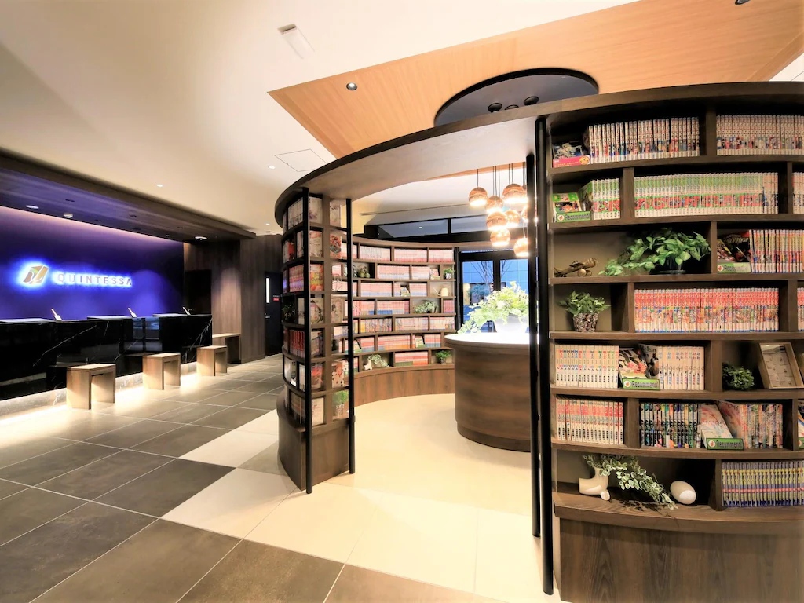
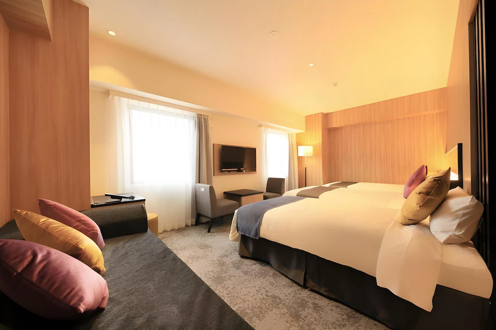
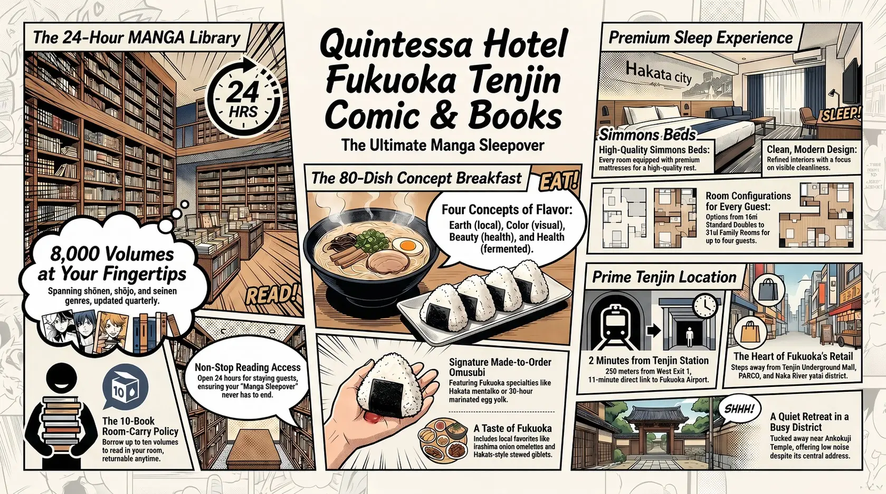
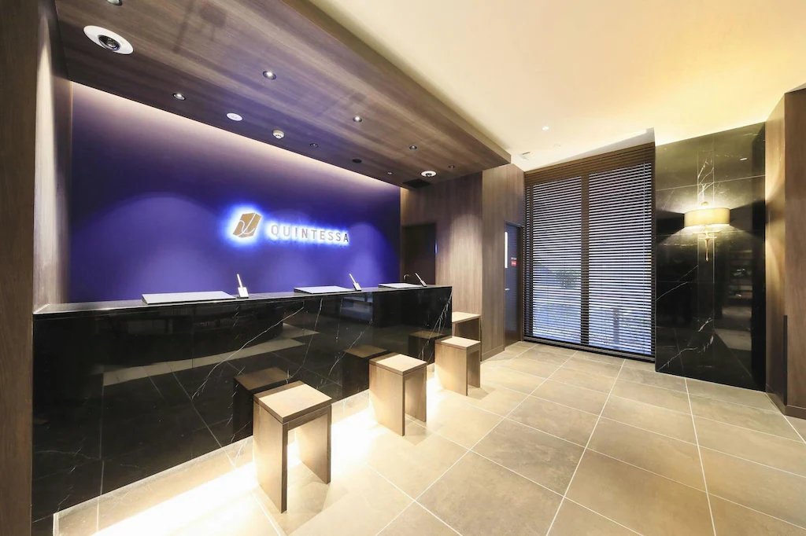
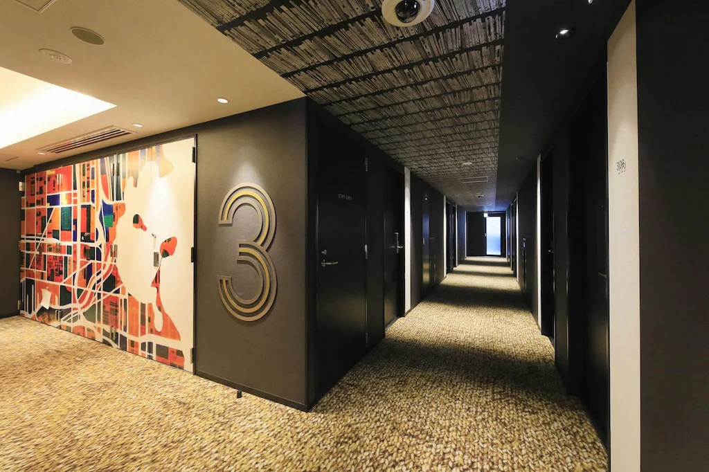
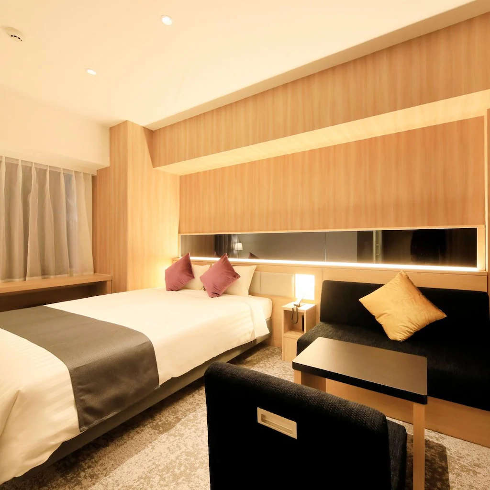
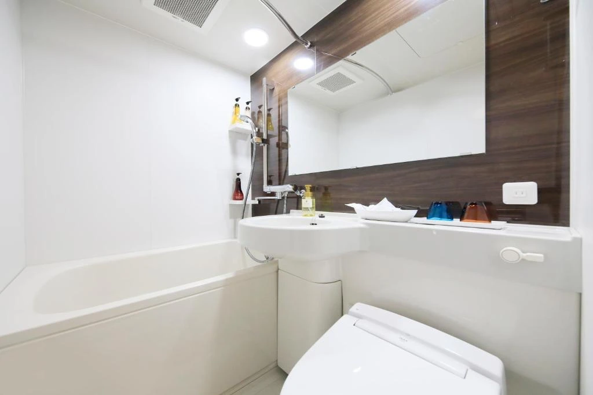
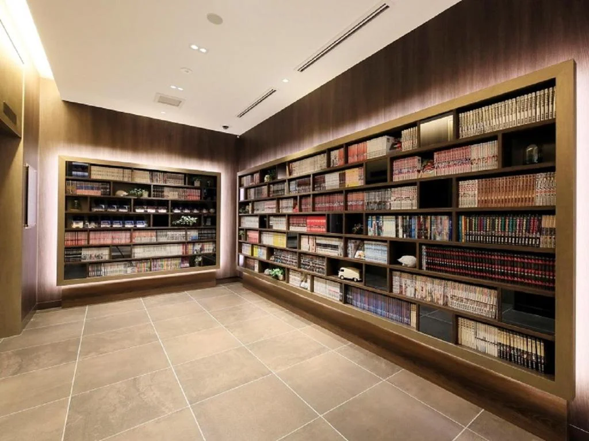
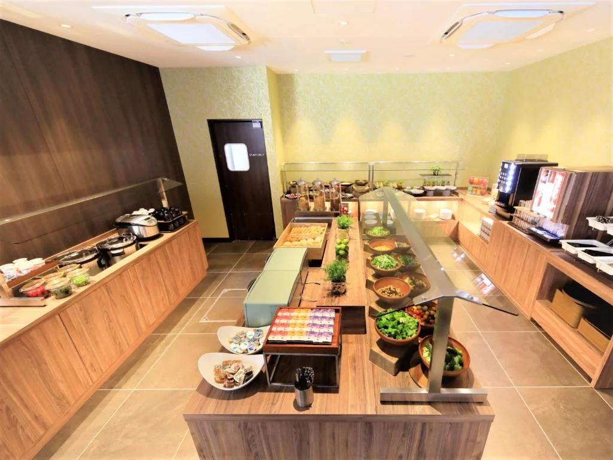

There is a particular moment that defines the Quintessa Hotel Fukuoka Tenjin experience, and it happens not at check-in but in the thirty seconds after. You drop your bag, collect your library card from reception, and walk ten steps into the lobby — and the shelves open up around you. Eight thousand manga volumes, organized by genre across floor-to-ceiling shelving in the ground-floor MANGA Library, available to you from this moment until the minute you check out, at no additional charge, at any hour of the day or night. Demon Slayer, ONE PIECE, Kingdom, Monster, Doraemon, shōnen and shōjo and seinen in quantities that outlast any stay. You have found the right hotel.
History: Born as a Manga Hotel from the First Page
Quintessa Hotel Fukuoka Tenjin Comic & Books opened on February 1, 2021, as the Fukuoka entry point of the Quintessa chain operated by Core Global Management Corporation — a Tokyo-headquartered hotel management company founded in 2007, with its first property at Narita Airport in 2013 and subsequent expansion to Sapporo, Osaka, Hakodate, Karuizawa, and Tokyo. The Comic & Books branding was not retrofitted onto an existing hotel concept: it was the founding premise of this particular Quintessa line, launched simultaneously at Fukuoka Tenjin and Osaka Shinsaibashi, each property built from the ground up around a manga library collection exceeding 7,000 volumes.
The Fukuoka property opened into a city that had no comparable offering. Tenjin in 2021 had a full spectrum of business hotels, a handful of boutique properties, and a thriving yatai culture along the Naka River — but no hotel that had made manga the organizing principle of its guest experience. The Comic & Books concept filled that gap with unusual directness: a 140-room building whose first floor is effectively a manga library with a reception desk, breakfast room, and coin laundry attached. The hotel has earned a 4.2-star average from over 560 Google Maps reviews since opening, a score that reflects the consistency of the product rather than the ambition of it.
The MANGA Library: 8,000 Volumes, 24 Hours, Free
The MANGA Library is the property's defining feature and the reason it belongs unambiguously in HotelManga's Manga Sleepover category. The collection stands at approximately 8,000 volumes — updated quarterly with new arrivals added alongside the maintained catalog of classics — and spans every major manga genre. The official title list includes shōnen works such as Demon Slayer: Kimetsu no Yaiba and Doraemon; shōjo titles including Kimi ni Todoke: From Me to You and Tenshi Nanka Ja Nai; and seinen works including Kingdom and Monster. The full catalog as documented by the hotel covers hundreds of series. All volumes are in Japanese.

Hotel guests have 24-hour access to the library from check-in to check-out at no charge, and crucially, they may take volumes to their rooms — up to ten titles at a time, returnable before departure. This room-carry provision is what separates the Quintessa's Manga Sleepover proposition from a café model: the reading happens in a proper bed, in a private room, with the lights set exactly as you want them, in the middle of the night if that suits you. Guests wishing to reach the library before checking in or after checking out may use it as a day-use space between 11:00 and 21:00 for ¥500 per hour, inclusive of a free drink — a policy that extends the library's reach to non-staying visitors and keeps the lobby animated throughout the day.
Library rules are enforced sensibly rather than punitively: a maximum of ten volumes in circulation per guest at any time, with returns before collection of the next batch. Books may be disinfected and cleaned after return; a return box sits in front of reception for after-hours drop-offs. Multiple Google Maps reviewers describe the library experience as the primary reason they chose the hotel and the primary reason they would return — one simply wrote that the collection was so extensive that she could not finish what she had planned to read in a single stay, and booked again for that reason.
Tenjin: Fukuoka's Commercial Heart and Its Manga Neighborhood
Fukuoka does not have a dedicated otaku district in the manner of Akihabara or Nipponbashi. What it has instead is Tenjin — a commercial district dense enough, and culturally varied enough, that manga and anime retail slots comfortably alongside fashion, food, and the kind of underground shopping architecture that Fukuoka does particularly well. The Tenjin Underground Shopping Center, one of Japan's longest underground malls, runs directly below the neighborhood; Mina Tenjin, PARCO, Iwataya, Solaria Stage, and a chain of department stores and specialty retailers form the street-level retail layer above it. An AEON, a Daiso, multiple GU and 3COINS stores, and layers of ramen, izakaya, and yatai dining fill in the gaps.
The hotel sits on a quiet backstreet off this commercial grid — reviewers consistently note that the address feels tucked away, which means the street noise level at night is lower than you might expect from a hotel two minutes from a major subway station. The Ankokuji Temple, one of Fukuoka's Zen institutions, is 200 meters from the front door: a stone garden in the middle of a shopping district, which is precisely the kind of adjacency that makes Fukuoka unusual. The Tenjin Underground Mall entrance is a three-minute walk. The Naka River yatai strip — Fukuoka's famous open-air food stall culture, most active in the evenings — is within comfortable walking distance. Canal City Hakata, the landmark shopping and entertainment complex, is reachable by subway in two stops or on foot in under twenty minutes.
The Rooms: 140 Rooms, Simmons Beds, and Designer Restraint
Quintessa Hotel Fukuoka Tenjin Comic & Books has 140 rooms in four configurations: Standard Double (16㎡, 140cm bed, 1–2 guests), Standard Twin (17㎡, two 100cm beds, 1–2 guests), Family Room (31㎡, two 110cm beds plus sofa bed plus optional extra bed, up to 4 guests), and Universal Room (32㎡, 160cm bed, 1–2 guests, designed for accessibility). All rooms are non-smoking. Every room is fitted with a Simmons-brand bed — a specification the hotel highlights in its official materials, and one that reviewers confirm: comfortable mattresses are among the most frequently praised room attributes across booking platforms.

Room design is described by the hotel's own materials as carrying "the graphic design of Hakata city and refined furniture" — a description that translates in practice to clean, contemporary interiors with accent walls and restrained Hakata-textile-influenced details. The rooms are compact by international standards, particularly the Standard Double at 16㎡, but this is entirely standard for the central Fukuoka business hotel tier. Reviewers note the compactness without significant complaint — it is the expected trade-off for a Tenjin address. The Family Room at 31㎡ is the most spacious configuration and the one consistently described as genuinely comfortable for groups and families.
In-room amenities include a refrigerator, LCD TV, air purifier and humidifier, hair dryer, handy emergency light, clothes hangers, and coffee mugs. The toilet is a Japanese-style washlet unit, praised in reviews for its design. In-room toiletries — toothbrush, razor, hairbrush, body towel, cotton swab, shampoo, conditioner, body wash, and pajamas — are stocked as standard. One reviewer note worth flagging: charging points in the rooms are limited, which was cited by a couple of guests who travel with multiple devices as a minor inconvenience. The hotel does not provide bottled water as standard, a sustainability choice it has explained in responses to reviews as part of its environmental commitments.
General Facilities
Beyond the MANGA Library, the ground floor houses the coin laundry (guests only), an ice machine, vending machines, and a designated smoking room — the only smoking area in an otherwise entirely non-smoking building. The reception desk operates around the clock with 24-hour staffing, which means late check-ins and last-minute requests are handled without the front-desk gap common to smaller properties. The hotel holds six paid parking spaces on-site at ¥2,200 per night (first-come, first-served), which is a typical arrangement for a Tenjin building — street parking in this district is essentially non-existent, and guests arriving by car should book parking in advance or use the Fukuoka subway from the airport instead.
A multilingual translation service — KOTOBAL, a Konica Minolta system — is available via tablet at reception, providing real-time voice-to-text interpretation in up to 31 languages. This is a notably practical provision for a Tenjin hotel where international visitor volume is high: several Google Maps reviewers mention Korean-speaking staff as a specific positive, and the translation tablet coverage means that language is not a barrier for arriving guests from any of Fukuoka's major visitor markets. Mobile payments accepted include WeChat Pay, Alipay, LINE Pay, PayPay, au PAY, and several other digital wallets — coverage of international payment systems that matches what the guest demographic actually carries.
Breakfast: 80 Dishes, Four Concepts, One Mentaiko Rice Ball
The breakfast buffet at Quintessa Hotel Fukuoka Tenjin is one of the most remarked-upon elements of the stay in reviews across booking platforms. The restaurant on the ground floor serves a buffet of approximately 80 dishes organized around four concepts — earth (local ingredients), color (visual variety), beauty (health-conscious options), and health (fermented foods and nutrient-dense dishes) — running from 6:30 to 10:00 with last order at 9:30, at a cost of ¥2,000 per adult. The restaurant seats 66 guests and serves a range that spans Japanese hot dishes, Western options, freshly baked bread, and low-sweetness desserts.
The signature item is an omusubi — rice ball — prepared to order at the buffet station, made with premium rice and a choice of mentaiko (spicy cod roe, a Fukuoka specialty) or a soy-sauce-marinated egg yolk prepared over 30 hours in the hotel's own recipe. The local-ingredient focus is specific to Fukuoka: Itoshima onion omelette, Hakata mentaiko shao-mai, stewed giblets in Hakata style, tonkotsu ramen, and chikuzenni (simmered chicken and vegetables in a Kyushu preparation) sit alongside Western staples and the bread selection. Reviewers consistently rate the breakfast as the highest-value element of the stay, with multiple describing it as the best business hotel breakfast they have had in Japan — a claim that reads as credible rather than hyperbolic given the 80-item count and the local sourcing commitment.
Cleanliness
Cleanliness is the most consistently high-scoring dimension across all booking platforms for Quintessa Hotel Fukuoka Tenjin Comic & Books, rated 9.0 on Almosafer and described across Google Maps and TripAdvisor reviews in terms of immediate, visible cleanliness: "very clean," "clean and modern," "rooms well-maintained." The hotel's eco-friendly housekeeping policy — trash is removed and towels replaced daily, but rooms are not deep-cleaned during multi-night stays unless requested — has drawn occasional mention from guests accustomed to full daily turndown, though the policy is standard across the Quintessa chain and is disclosed in advance. The MANGA Library volumes are cleaned and disinfected after each return, a practice that reviewers who noticed the hand-sanitizer dispensers at the library entrance treated as a positive rather than an inconvenience. The building itself opened in 2021 and remains in new-construction condition by the standards of the Tenjin hotel market.

Value
Quintessa Hotel Fukuoka Tenjin Comic & Books prices at approximately ¥9,000–¥15,000 per room per night depending on room type and season, with breakfast adding ¥2,000 per person. At that rate, the value calculation is unusually direct: you are getting a Simmons bed in a clean, modern room two minutes from a subway station in Fukuoka's most central neighborhood, with 24-hour access to 8,000 manga volumes included in the room rate. The breakfast buffet, at ¥2,000 with 80 items including local Fukuoka specialties, competes comfortably with standalone restaurants in the area at that price. The total package — location, manga library, breakfast, clean contemporary rooms — is consistently described across review platforms as value-positive, with multiple guests noting that the price-to-quality ratio was the deciding factor in a repeat booking.
The honest limitation is room size. The Standard Double at 16㎡ is compact, and guests who need space to work or spread out will find it tight. The Family Room at 31㎡ remedies this for groups, but at a commensurately higher rate. For solo travelers and couples prioritizing location and the library experience over room volume, the value is clear. For guests who need a desk setup for extended work sessions or who travel with significant luggage, the room size constraint is worth weighing against the price before booking the smaller categories.
Practical Information
- Check-in: 15:00 Check-out: 11:00
- Price Range: ¥9,000–¥15,000 / room per night; breakfast ¥2,000 / adult
- Rooms: 140 rooms, 4 types — Standard Double (16㎡), Standard Twin (17㎡), Family Room (31㎡, up to 4 guests), Universal Room (32㎡, accessibility-designed); all non-smoking
- MANGA Library: ~8,000 volumes, all Japanese; 24-hr free access for hotel guests; borrow up to 10 volumes to room; day-use ¥500/hr (11:00–21:00, includes free drink)
- Library genres: Shōnen, shōjo, seinen — including Demon Slayer, ONE PIECE, Kingdom, Monster, Doraemon, Kimi ni Todoke; updated quarterly
- Breakfast: Buffet ~80 dishes; 6:30–10:00 (L.O. 9:30); ¥2,000 adult / free under school age; restaurant 66 seats
- Facilities: Coin laundry (guests only), ice machine, vending machines, smoking room (1F), 24-hr front desk, elevator
- Parking: 6 spaces on-site, ¥2,200/night, first-come first-served — advance booking strongly recommended
- Multilingual service: KOTOBAL tablet translation in 31 languages at reception
- Mobile payments: WeChat Pay, Alipay, LINE Pay, PayPay, au PAY, merpay, yuchopay
- Wi-Fi: Free throughout property
- Children: All ages welcome; children 6 and above charged as adults; pre-school children free for breakfast
- Pets: Not permitted
- Nearest access: Tenjin Station West Exit 1 (~2 min walk); Tenjin-Minami Station Exit 6 (~5 min walk)
Getting There
From Fukuoka Airport (FUK)
- Subway Airport Line to Tenjin Station: ~11 min
- Exit West 1, then 2 min walk to hotel
- Fastest airport-to-Tenjin option in Fukuoka
- Subway runs frequently; no taxi required
From Hakata Station (JR / Shinkansen)
- Subway Airport Line to Tenjin: 2 stops, ~5 min
- Exit West 1, 2 min walk
- Alternatively: 20 min walk from Hakata on foot
- Tenjin-Hakata corridor covered by multiple bus lines
From Tenjin Bus Terminal
- Inter-city buses from Osaka, Nagasaki, Kumamoto, Beppu arrive at Tenjin Bus Center
- Hotel is a 5-min walk from the terminal
- Tenjin Daiwashoken-mae bus stop is 200m from hotel
- Night buses from Tokyo and Osaka also arrive here
By Car
- Fukuoka Urban Expressway: Tenjin North IC, ~5 min
- 6 paid parking spaces on-site (¥2,200/night, first-come)
- Nearby paid lots available if hotel parking full
- Subway from airport is strongly recommended over driving
Tips for Getting the Most Out of Your Stay
Visit the MANGA Library before dinner on your first evening, not after — the library is at its most browsable when you have time to work through the shelves without the clock running. The genre organization makes series-hunting efficient, but the collection is large enough that a systematic first visit pays better dividends than a rushed one. Check in, collect your library card, spend 20 minutes with the shelves, select your first batch, and then go out. The volumes will be waiting in your room when you return.
Book breakfast in advance as part of your room plan if possible. The 80-dish buffet is the aspect of this hotel that most consistently surprises guests who arrive with lowered business-hotel expectations, and the omusubi station — rice balls made to order with mentaiko or marinated egg yolk — is worth building your morning around. The restaurant opens at 6:30, which allows an early start for guests with morning plans at Dazaifu Tenmangu or Canal City Hakata before the crowds arrive.
The parking situation requires advance attention if you are arriving by car. Six spaces for 140 rooms means availability is first-come, first-served with no guarantee. The Fukuoka subway from the airport is eleven minutes and drops you two minutes from the hotel — for the vast majority of guests, this is the correct approach, and removing the car from the equation also removes the parking stress and adds the freedom of Fukuoka's well-connected transit network for day trips to Dazaifu, the Canal City area, and Yanagibashi Market.
For the yatai experience — Fukuoka's open-air food stall culture, one of the city's genuine singularities — the stalls along the Naka River run from early evening until late night, with the prime hours between 19:00 and 22:00. They are walkable from the hotel, cash-preferred, and intimate by design: each stall seats ten to twelve people at a counter, and conversation with the cook and other diners is part of the experience. It is the right way to end an evening before returning to the library for the second shift.
Beyond the Shelves: An Honest Assessment
Quintessa Hotel Fukuoka Tenjin Comic & Books is not trying to be a luxury hotel. It is trying to be the best manga hotel in Fukuoka, and it succeeds at that with a directness that is genuinely refreshing. The library is real — 8,000 volumes is not a marketing figure rounded up from a smaller number, and the quarterly updates ensure the catalog stays current. The breakfast is real — 80 dishes in a 66-seat restaurant at ¥2,000 is a substantive offer, not a continental tray with a thermos. The location is real — two minutes from a subway station in Fukuoka's most commercial district is an address that works for every type of trip.
What you are trading for these specifics is room size. The Standard Double at 16㎡ is compact, and the hotel does not apologize for it. If you need space, the Family Room at 31㎡ provides it. If you don't — if you are the traveler who sleeps in the room, reads in the lobby, and eats at the yatai — then the room size is irrelevant and the library is everything. Quintessa Hotel Fukuoka Tenjin knows exactly who it is for, built the hotel to serve them precisely, and delivers on that premise night after night. For the HotelManga reader who has been looking for a proper manga sleepover hotel in Kyushu, the search ends here.
Hotel Directory
Quintessa Hotel Fukuoka Tenjin Comic & Books (クインテッサホテル福岡天神 Comic & Books)
Photo Gallery

Photo 1
Photo 2
Photo 3'">
Photo 4'">
Photo 5'">
Photo 6'">Eight Thousand Volumes Are Waiting
Rooms fill quickly on weekends — especially the Family Room. Book ahead.